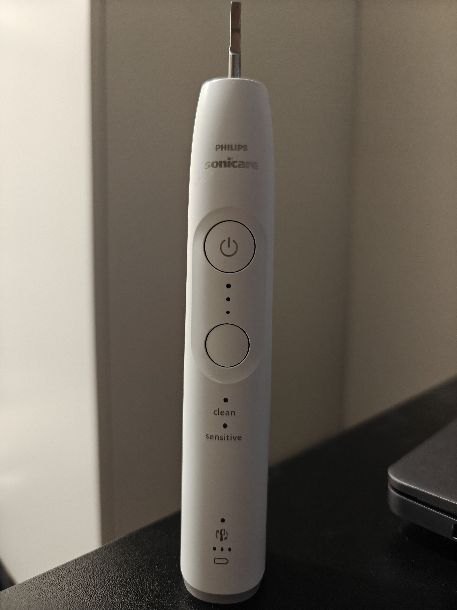

Sähköhammasharja
Philips Sonicare 6100
Philips Sonicare 6100 on tehokas ja helppokäyttöinen sähköhammasharja, joka on suunniteltu tehokkaaseen ja hellävaraiseen hampaiden puhdistukseen.
Sähköhammasharjassa on kaksi tilaa: puhdistava ja hellävarainen. BrushSync-tekniikka valitsee automaattisesti sopivan tilan ja tehon käytettävän älyharjaspään mukaan.
